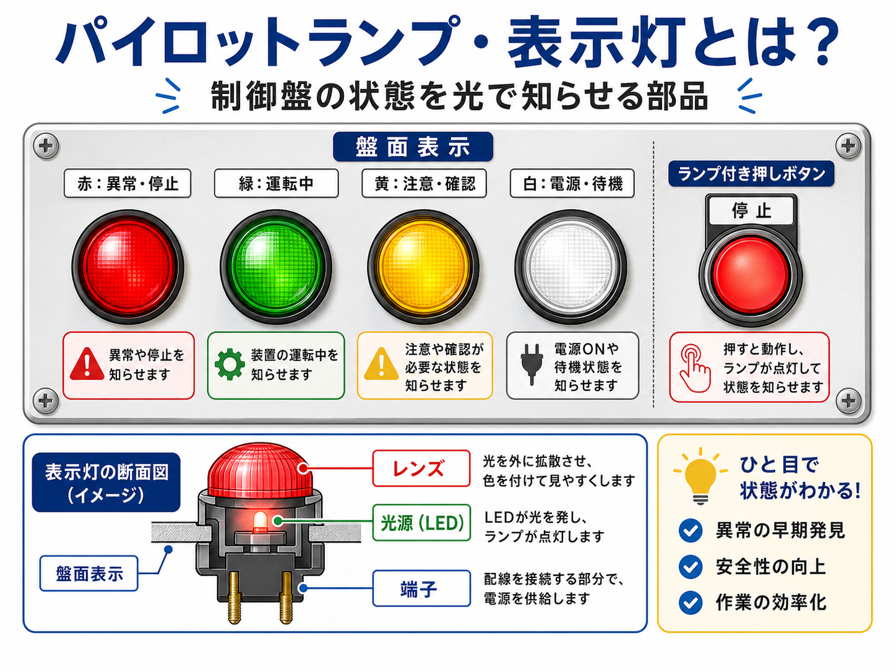
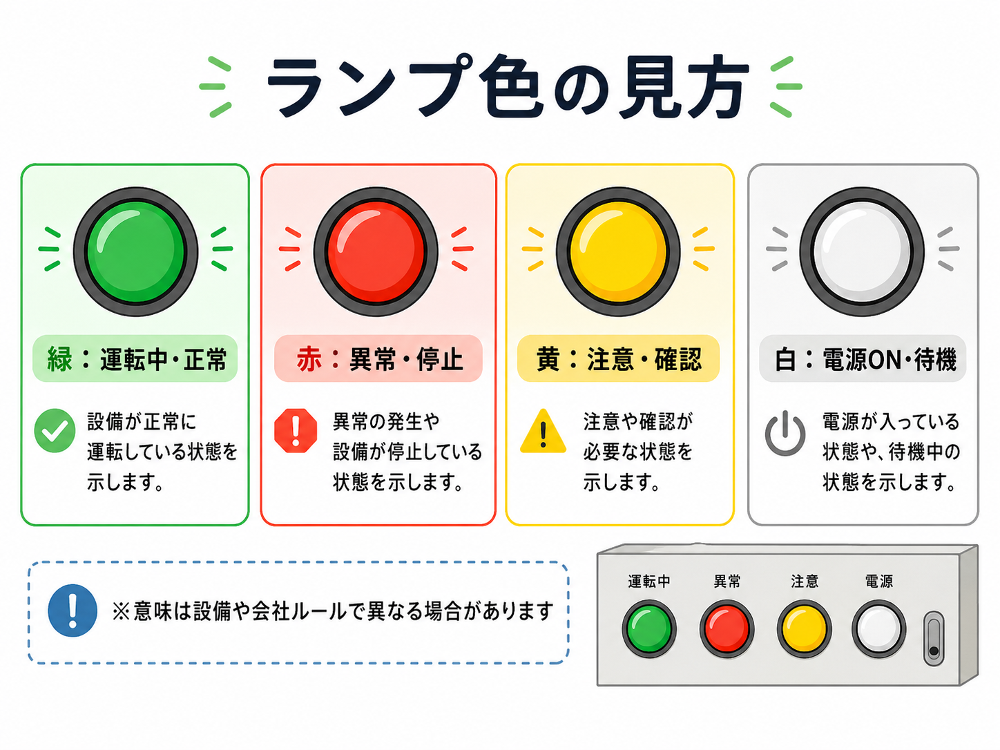
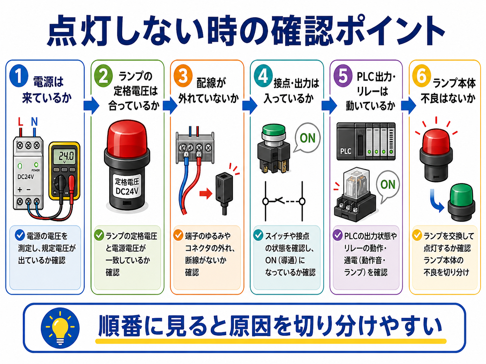

向いている人
- 制御盤のランプ表示の意味を整理したい人
- 赤・緑・黄・白の使い分けを知りたい人
- 表示灯が点かない時の確認順を知りたい人
パイロットランプ・表示灯は、設備が今どういう状態かを作業者に知らせるための部品です。 制御盤では、運転中・停止中・異常発生・電源ON・準備完了などを、ランプの点灯や色で分かりやすく伝えます。
押しボタンスイッチやセレクタスイッチが「操作する部品」だとすると、表示灯は「状態を知らせる部品」です。 操作するものではなく、今の設備の状態を見て判断するための目印として使います。
何が点いていて、何が消えているかで、設備の今の状態をすばやく把握できます。 トラブル時も、どのランプが点かないか、どの色が点いたままかが大きな手がかりになります。

先輩表示灯は、設備の今の状態をひと目で分かるようにするためのランプだね。

新人押しボタンみたいに操作するものではなくて、見て判断するためのものなんですね。

先輩そう。運転中か、異常か、準備できたかを、現場で迷わず見分けやすくする役割があるよ。
パイロットランプ・表示灯とは、制御盤や操作盤に取り付けられる表示用のランプです。 装置の動作状態や信号の有無を、ランプの点灯・消灯・色で知らせます。
たとえば、緑ランプが点灯していれば運転中、赤ランプが点灯していれば異常発生中、白ランプが点灯していれば電源ONというように使うことがあります。 現場ではメーカーや設備ごとのルールもありますが、色の意味にはある程度よく使われる傾向があります。

運転中、停止中、待機中など、設備の今の状態を見やすくします。
異常発生、警報、保護動作などを、赤や黄のランプで知らせることがあります。
電源が来ているか、出力が出ているか、条件が成立しているかを見る目印になります。
押しボタンの中にランプが入っていて、押す機能と表示機能を兼ねることもあります。
設備トラブルでは、いきなり図面全体を追うよりも、どの表示灯が点いているか・消えているかを見ると、 確認の入口をつかみやすくなります。
表示灯は色で状態を分けることが多いです。 ただし、色の意味は絶対ではなく、設備仕様や社内ルールで変わることもあります。 まずはその設備での意味を確認しつつ、よくある使い方を知っておくと見やすくなります。

| 色 | よくある意味 | 現場での見方 |
|---|---|---|
| 緑 | 運転中 / 正常 | 機械が動いている、準備完了、正常動作中として使われることが多いです。 |
| 赤 | 異常 / 停止 / 非常系 | アラーム、停止中、異常発生中など、注意が必要な状態で使われることがあります。 |
| 黄 | 注意 / 警告 / 条件待ち | 完全な異常ではないが、注意して見たい状態や中間状態で使われます。 |
| 白 | 電源ON / 待機 / 汎用表示 | 制御電源が入っている、待機中、補助表示などで使われることがあります。 |
緑だから必ず運転、赤だから必ず異常と決めつけるのではなく、盤面の銘板や図面、設備の仕様を確認して判断します。 特に改造盤や古い設備では、一般的なイメージと違うこともあります。
表示灯を見るときは、単純に「点いている・消えている」だけでなく、 どのタイミングで点くのか、どの操作と連動しているのかも意識すると分かりやすいです。
電源投入時なのか、運転開始後なのか、異常時だけなのかを確認します。
リレー接点、PLC出力、タイマー、異常信号など、元の信号を確認します。
押しボタン、セレクタスイッチ、ブザー、タッチパネル表示とセットで見ると追いやすいです。
本来点くはずなのに消えているのか、正常だから消えているのかで判断が変わります。
表示灯は、ただのランプではなく、どこかの信号を目で見える形にしたものです。 元信号がどこから来ているかを意識すると、回路の理解にもつながります。
表示灯が点かない時は、すぐに「ランプ切れ」と決めつけず、電源、ランプ電圧、配線、接点、PLC出力などを順番に見ます。 LEDタイプでも、配線不良や出力不良で点かないことがあります。

AC100V、AC200V、DC24Vなど、元の電源が来ているかを確認します。
DC24V用なのにAC100Vを入れていないかなど、ランプの仕様を確認します。
リレー接点やPLC出力が実際にONしているかを見ます。
端子のゆるみ、断線、抜けかけなどで点灯しないことがあります。
球切れやLED不良で点灯しないこともあります。交換前に他原因も見ます。
条件未成立で点かないだけのこともあるので、回路条件や設備状態も確認します。

新人ランプが消えていると、ついランプ自体が悪いと思ってしまいます。
先輩気持ちは分かるけど、まずは電圧と出力だね。ランプまで電気が来ていないだけのこともかなり多いよ。
表示灯は見た目が似ていても、定格電圧、AC/DC、色、サイズ、端子方式が違います。 交換時は、見た目だけで決めずに仕様を確認することが大切です。
| 確認項目 | 見る理由 |
|---|---|
| 定格電圧 | DC24V、AC100Vなどが合っていないと正常に点灯しません。 |
| AC/DC種別 | 同じ電圧でもAC用とDC用では内部構成が違うことがあります。 |
| 色 | 盤面の意味づけと一致させないと、現場で混乱しやすくなります。 |
| 取付穴サイズ | φ22など、既存盤の穴径に合うか確認が必要です。 |
| 端子方式 | ねじ端子かコネクタ式かで、交換や配線のしやすさが変わります。 |
本来は異常表示の赤ランプなのに、交換後に別の色になってしまうと、見た人が状態を誤解することがあります。 盤面の意味づけを崩さないように、色と仕様を合わせて交換するのが大切です。
パイロットランプ・表示灯は、制御盤や操作盤で設備の状態を知らせるための表示部品です。 運転中、停止中、異常、注意、電源ONなどを、ランプの点灯や色で分かりやすく伝えます。
ランプ色にはよくある使い方がありますが、最終的にはその設備の仕様や銘板を優先して確認します。 見た目だけで決めつけず、どの信号で点灯するかまで意識すると、回路の理解もしやすくなります。
点灯しない時は、電源、定格、配線、接点、出力、ランプ本体の順番で確認していくと追いやすいです。 状態表示の入口として、表示灯をうまく使えると現場でかなり見やすくなります。